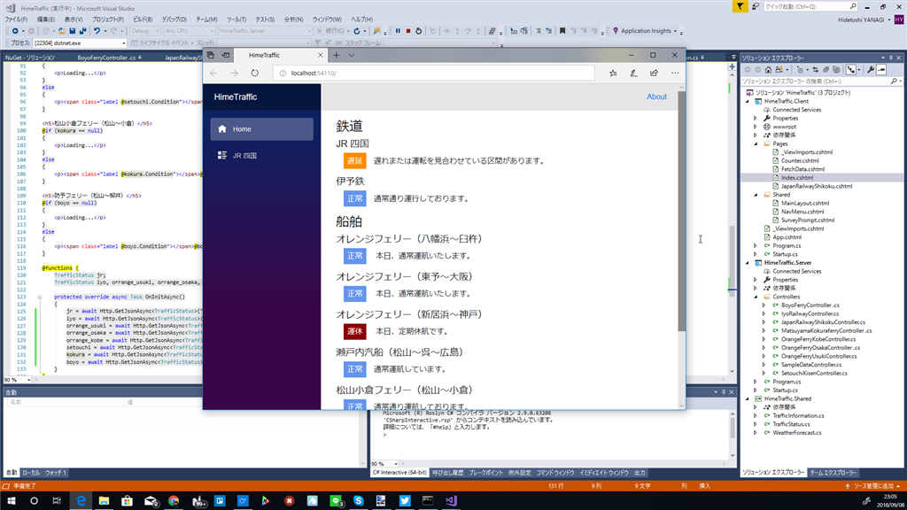

9月8日：巷もすなる Blazor というものを、おっさんもかいてみんとてするなり
公開日：

巷もすなる Blazor というものを、おっさんもかいてみんとてするなり。この前のプロ生・大阪で聞いてきた内容を反芻しながらだけど、実際手を動かしてみるといろいろわからんことがでてきた。
ちなみに Blazor というのは Razor（C#）で WebAssembly を作っちまおうぜっていうプロジェクトなのだそうだ。サーバーもクライアントも C# で書けるのがいいと思う（JavaScript は極力やりたくねー！）。
@inject HttpClient Http
DI で注入するとクライアントで HttpClient が使えるようになるんだけど、なんで @using じゃないのかなー……たぶん「HttpClient をクライアントで使うぜー、アセンブリをローカルへダウンロードしてくれー」って言わなきゃいけないからだな。
HtmlString
エンコード済みの文字列を扱いたかったのだけど、MvcString や HtmlString がなかった。代わりにMarkupStringというのがあるので、それを使うといいらしい。
@((MarkupString)myMarkup)@functions { string myMarkup = "<p >This is a markup string.</p>"; }
詳しくはみんな大好き StackOverFlow を参照。
むしろワークアラウンドの2個目が大事そうな気がする。その先のリンクにある issue でしゃべってる内容がさっぱりわからんが、そこらへんは Blazor の仕組みをもう少し知らないとダメだな。
Loading......
クライアントに
@if (obj == null) { <p>Loading...</p> } else { <p>@obj.Hoge</p> }
などと書くとobjにオブジェクトが格納されるまで「Loading...」と表示されるんだけど、これがなぜかよくわからんかった。で、いろいろこねくり回して気が付いたんだけど、protected override async Task OnInitAsync()で変数を初期化するとビューがリロードされるのかもしれない。変数を複数用意してOnInitAsync()で初期化してみたけど、XHR のときみたいにロードが完了した変数から表示されていくのではなく、すべての読み込みが完了してからページが書き換えられた。そうだとしたら、とくに難しくはない。
ShiftJIS の扱い
今回は鉄道やフェリーの運行情報をスクレイピングするサイトを作っていたのだけど、1件だけ ShiftJIS なサイトがあった（ガッデム！）。ASP.NET Core の場合、NuGet でSystem.Text.Encoding.CodePagesを追加して
// これがないと下行で例外 Encoding.RegisterProvider(CodePagesEncodingProvider.Instance); // ShiftJIS エンコーディングを取得 var encoding = Encoding.GetEncoding(932); var reader = new System.IO.StreamReader(stream, encoding); var text = await reader.ReadToEndAsync());
みたいな感じで処理してあげないといけない。
nuget の構成が無効です。
nuget の構成が無効です。 pic.twitter.com/4yuTN4BAws
— だるやなぎ准将 (@daruyanagi) September 8, 2018
一瞬焦ったけど、Visual Studio の再起動で治った。
ビルドが始まらない
［Ctrl］＋［Break］でビルドを中断し、再度実行するとだいたい成功する。
ビューのコンパイルが面倒
Razor はビュー部分を編集するとすぐにブラウザーへ反映されたけど、WebAssembly になってるとそうはいかない。ちょろっとした変更でもコンパイルが必要になる。これは割と面倒くさい気がした。
バインディングやコンポーネントはまだわかってないけど、これは結構楽しいかもしれないなーと思った。Share プロジェクトにモデルを書くと、Server と Client で共有できるのとか、結構うれしい……JSON でシリアライズ・デシリアライズしなくていいしなー（← そこか？）。サーバーサイドは MVC/API の知識が使えるし、クライアントサイドは Razor の経験が役立つ。ここにメリットを感じる人＆なんでも C# で書きたい人にはドンピシャなプロジェクトだと思った。
ちなみに、今作ってるアプリは愛媛県の交通状況を一覧できるようにしたものだけど
- 飛行機の遅延情報（電車と船はだいたい完了）
- キャッシュ機構（スクレイピング元に迷惑がかかる）
- 通知
を作ったら公開したいかなって思う。いつになるか、モチベが続くかは知らない。